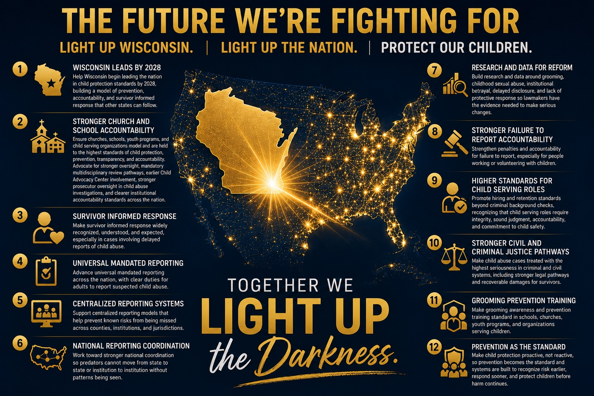

How do we measure the worth of a child?
By the systems we build to protect them.
Reports Deserve Documentation, Pattern Review, and Protective Action
These truths belong together: delayed disclosure is common, false reports are uncommon, and child protection systems should be built to respond before harm continues.
Delayed Disclosure Is Common
Disclosure often occurs years later in adulthood, which is a well-documented pattern among survivors of child sexual abuse.
Systems must be built to recognize risk and act early.
False Reports Are Rare
Research estimates false report rates around 2-8%.
Reports should be documented carefully, reviewed for patterns, and taken seriously.
EVAWI; NSVRC, Lisak et al.Systems Must Carry the Responsibility
Because delayed disclosure is common and false reports are uncommon, systems should prioritize child safety, documentation, and early intervention.
Systems should not rely on survivors to expose harm after the fact.
Wisconsin is falling behind many states in key areas of child protection.
Children deserve safe adults, safe organizations, and safe systems, especially in places families are asked to trust.
Project Worth works to close gaps in reporting, oversight, and accountability so churches, schools, youth-serving organizations, and communities are held to higher standards of prevention and protection.
Our goal is simple: help make Wisconsin the safest state for children in the nation by 2030, then help make that protection the standard for every child.
The Future We’re Fighting For
Project Worth is working to identify the strongest child protection policies already being used across the country, study where Wisconsin is falling behind, and help bring the best protections here.
The goal is simple: make Wisconsin the safest state for children in the nation by 2030. Then help make that protection the standard for every child in the United States.
Does one of these areas speak to you? We would love to connect you with the team members helping move that work forward.

The Case for Change
Explore deeper system gaps, survivor voices, advocates, and partner lights through the Light the Way map.
For the full gap-by-gap view, visit Light the Way and help us build public awareness across Wisconsin and beyond.
Volunteer With PurposePartner in Prevention and Policy Research
Project Worth welcomes researchers, students, advocates, policy minds, and community members who want to help evaluate what is working in child protection, what is failing, and what Wisconsin can learn from stronger models in other states.
Interested in helping us research, review, or compare child protection policies?
Explore the Case for Change and help us Light the Way.